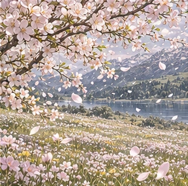
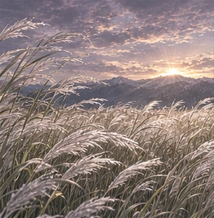
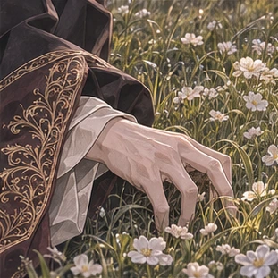
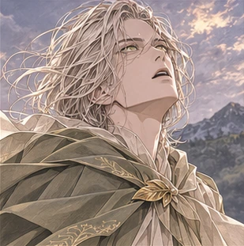
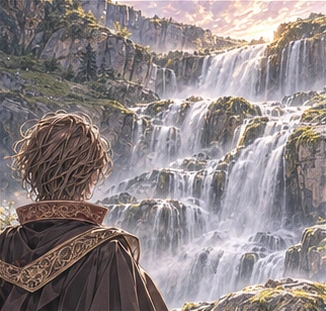

1막 삽화·원문·번역 대조
1막 · 꽃이 핀 골짜기

01 · 저녁의 골짜기와 잠을 이루지 못하는 파우스트
독일어 원문 · 한국어 번역
독일어 원문
1. Akt--Anmutige Gegend
Faust auf blumigen Rasen gebettet, ermüdet, unruhig,
schlafsuchend.
Dämmerung.
Geister-Kreis schwebend bewegt, anmutige kleine Gestalten.
ARIEL.
Gesang von Aolsharfen begleitet.
한국어 번역
제1막 · 꽃이 핀 골짜기. 파우스트가 꽃이 핀 풀밭에 누워 있다. 지치고 불안하여 잠을 청한다. 땅거미가 진다. 우아하고 작은 정령들이 허공에서 원을 그리며 움직인다. 아리엘이 바람 하프 소리에 맞춰 노래한다.

02 · 봄꽃이 비처럼 내리는 푸른 들판
독일어 원문 · 한국어 번역
독일어 원문
Wenn der Blüten Frühlingsregen
Über alle schwebend sinkt,
Wenn der Felder grüner Segen
Allen Erdgebornen blinkt,한국어 번역
봄꽃이 비처럼 모두에게 내려앉고 푸른 들판이 땅에 태어난 모든 이에게 빛날 때,

03 · 사람의 처지를 가리지 않고 돕는 작은 정령들
독일어 원문 · 한국어 번역
독일어 원문
Kleiner Elfen Geistergröße
Eilet, wo sie helfen kann;
Ob er heilig, ob er böse,
Jammert sie der Unglücksmann.
한국어 번역
작은 요정들은 너그러운 마음으로 도울 수 있는 곳에 달려간다. 거룩한 사람이든 악한 사람이든, 불행한 이를 가엾게 여긴다.

04 · 파우스트의 머리맡을 에워싼 정령들을 부르는 아리엘
독일어 원문 · 한국어 번역
독일어 원문
Die ihr dies Haupt umschwebt im luft'gen Kreise,
Erzeigt euch hier nach edler Elfen Weise:
Besänftiget des Herzens grimmen Strauß,
Entfernt des Vorwurfs glühend bittre Pfeile,한국어 번역
이 머리 위를 공중에서 돌고 있는 너희여, 요정답게 너그러이 행동하여라. 마음속의 거센 싸움을 가라앉히고, 뜨겁고 쓰라린 자책의 화살을 거두어라.

05 · 파우스트의 머리를 서늘한 풀밭에 받쳐 주는 정령
독일어 원문 · 한국어 번역
독일어 원문
Sein Innres reinigt von erlebtem Graus!
Vier sind die Pausen nächtiger Weile;
Nun ohne Säumen füllt sie freundlich aus!
Erst senkt sein Haupt aufs kühle Polster nieder,한국어 번역
그가 겪은 끔찍한 일에서 그의 마음을 씻어라. 밤에는 네 차례의 쉼이 있다. 지체하지 말고 그 시간을 다정하게 채워라. 먼저 그의 머리를 서늘한 베개에 내려놓아라.

06 · 파우스트의 이마에 닿는 레테의 이슬
독일어 원문 · 한국어 번역
독일어 원문
Dann badet ihn im Tau aus Lethes Flut!
Gelenk sind bald die krampferstarrten Glieder,
Wenn er gestärkt dem Tag entgegen ruht.
Vollbringt der Elfen schönste Pflicht:한국어 번역
그러고 나서 망각의 강 레테에서 가져온 이슬로 그를 씻어라. 기운을 되찾아 날이 밝기까지 쉬고 나면 굳은 팔다리도 곧 부드러워지리라. 요정의 가장 아름다운 의무를 다하여라.

07 · 안개가 내려오는 들판 위에서 노래를 잇는 정령들
독일어 원문 · 한국어 번역
독일어 원문
Gebt ihn zurück dem heiligen Licht!
CHOR
einzeln, zu zweien und vielen, abwechselnd und gesammelt.
Wenn sich lau die Lüfte füllen
Um den grünumschränkten Plan,
Süße Düfte, Nebelhüllen한국어 번역
그를 신성한 빛으로 돌려보내라! 합창. 한 명씩, 둘씩, 여럿이 번갈아 또는 함께 노래한다. 푸른 풀밭 둘레에 포근한 공기가 차오르면, 달콤한 향기와 안개를

08 · 정령의 노래에 눈을 감기 시작하는 파우스트
독일어 원문 · 한국어 번역
독일어 원문
Senkt die Dämmerung heran,
Lispelt leise süßen Frieden,
Wiegt das Herz in Kindesruh
Und den Augen dieses Müden한국어 번역
저녁 어스름이 내려 보낸다. 달콤한 평화를 속삭이고, 마음을 어린아이처럼 조용히 달래어 지친 이의 눈에

09 · 밤하늘에 하나둘 떠오르는 별
독일어 원문 · 한국어 번역
독일어 원문
Schließt des Tages Pforte zu.
Nacht ist schon hereingesunken,
Schließt sich heilig Stern an Stern;
Große Lichter, kleine Funken한국어 번역
낮의 문을 닫아 준다. 밤이 내려앉아 별과 별이 성스레 이어진다. 큰 빛과 작은 불꽃이
10 · 나무 너머 호수에 비친 별빛
독일어 원문 · 한국어 번역
독일어 원문
Glitzern nah und glänzen fern;
Glitzern hier im See sich spiegelnd,
Glänzen droben klarer Nacht;
Tiefsten Ruhens Glück besiegelnd한국어 번역
가까이서 반짝이고 멀리서 빛난다. 호수에 비쳐 반짝이고 맑은 밤하늘에서 빛난다. 가장 깊은 휴식의 평온을 지켜 주며

11 · 보름달 아래 깊이 잠든 파우스트
독일어 원문 · 한국어 번역
독일어 원문
Herrscht des Mondes volle Pracht.
Schon verloschen sind die Stunden,
Hingeschwunden Schmerz und Glück;
Fühl' es vor! Du wirst gesunden;한국어 번역
보름달이 환히 빛난다. 지나간 시간은 사그라들고 고통과 기쁨도 자취를 감췄다. 느껴 보라. 너는 회복할 것이다.

12 · 새벽빛이 닿기 시작하는 골짜기와 언덕
독일어 원문 · 한국어 번역
독일어 원문
Traue neuem Tagesblick!
Täler grünen, Hügel schwellen,
Buschen sich zu Schattenruh;
Und in schwanken Silberwellen한국어 번역
새날의 빛을 믿어라. 골짜기가 푸르고 언덕이 솟아 있으며 숲은 그늘 속에 쉰다. 흔들리는 은빛 물결처럼

13 · 은빛 이삭 너머 밝아오는 새벽
독일어 원문 · 한국어 번역
독일어 원문
Wogt die Saat der Ernte zu.
Wunsch um Wünsche zu erlangen
Schaue nach dem Glänze dort!
Leise bist du nur umfangen;한국어 번역
곡식이 출렁이며 수확을 향해 무르익는다. 소원을 하나씩 이루고 싶다면 저기 빛나는 곳을 바라보라. 너를 감싼 것은 가볍다.

14 · 잠에서 깨어 손을 움직이는 파우스트
독일어 원문 · 한국어 번역
독일어 원문
Schlaf ist Schale: wirf sie fort!
Säume nicht dich zu erdreisten,
Wenn die Menge zaudernd schweift;
Alles kann der Edle leisten,한국어 번역
잠이라는 껍질을 벗어 던져라. 사람들이 망설이며 헤맬 때 과감히 나아가기를 주저하지 마라. 고결한 이는 모든 것을 해낼 수 있다,

15 · 새날의 굉음에 고개를 드는 아리엘
독일어 원문 · 한국어 번역
독일어 원문
Der versteht und rasch ergreift.
Ungeheures Getöse verkündet das Herannahen der Sonne.
ARIEL.
Horchet! horcht dem Sturm der Hören!
Tönend wird für Geistesohren
Schon der neue Tag geboren.한국어 번역
뜻을 알아보고 재빨리 붙잡는 사람이라면. 엄청난 굉음이 해가 가까워 오는 것을 알린다. 아리엘. 들어라, 높은 곳의 폭풍 소리를 들어라! 정령들의 귀에는 새날이 소리와 함께 태어난다.

16 · 바위산 사이를 뚫고 들어오는 황금빛
독일어 원문 · 한국어 번역
독일어 원문
Felsentore knarren rasselnd,
Phöbus' Räder rollen prasselnd,
Welch Getöse bringt das Licht!
Es trommetet, es posaunet,한국어 번역
바위 문이 요란하게 삐걱이고 태양신 포이보스의 수레바퀴가 요동치며 굴러온다. 빛이 얼마나 큰 굉음을 몰고 오는가! 북과 나팔이 울린다.

17 · 정령들이 꽃송이 속으로 몸을 숨긴다
독일어 원문 · 한국어 번역
독일어 원문
Auge blinzt und Ohr erstaunet,
Unerhörtes hört sich nicht.
Schlüpfet zu den Blumenkronen,
Tiefer, tiefer, still zu wohnen,한국어 번역
눈은 깜박이고 귀는 놀란다. 너무나 큰 소리는 도리어 들리지 않는다. 꽃송이 속으로 숨어라. 더 깊이, 더 깊이 들어가 조용히 있어라.

18 · 바위틈과 잎사귀 아래로 숨는 정령들
독일어 원문 · 한국어 번역
독일어 원문
In die Felsen, unters Laub!
Trifft es euch, so seid ihr taub.
FAUST.
Des Lebens Pulse schlagen frisch lebendig,
Ätherische Dämmerung milde zu begrüßen.한국어 번역
바위틈으로, 잎사귀 밑으로! 그 소리를 그대로 맞으면 귀가 멀리라. 파우스트. 생명의 맥박이 새롭게 힘차게 뛰며, 맑고 부드러운 여명을 맞이한다.

19 · 파우스트가 꽃밭에 손을 짚는다
독일어 원문 · 한국어 번역
독일어 원문
Du, Erde, warst auch diese Nacht beständig
Und atmest neu erquickt zu meinen Füßen,
Beginnest schon mit Lust mich zu umgeben.
Du regst und rührst ein kräftiges Beschließen,한국어 번역
대지여, 너는 이 밤에도 한결같았고, 새로 기운을 얻어 내 발밑에서 숨 쉰다. 너는 벌써 기쁨으로 나를 감싸고, 내 안에 굳은 결심을 일깨운다.

20 · 안개 사이로 새날을 맞는 숲과 골짜기
독일어 원문 · 한국어 번역
독일어 원문
Zum höchsten Dasein immer fortzustreben.--
In Dämmerschein liegt schon die Welt erschlossen,
Der Wald ertönt von tausendstimmigem Leben,
Tal aus Tal ein ist Nebelstreif ergossen;한국어 번역
더 높은 삶을 향해 계속 나아가겠다는 결심을. 여명의 빛 속에 세상이 벌써 열려 있고, 숲은 수많은 생명의 소리로 울린다. 골짜기에서 골짜기로 안개가 띠처럼 퍼진다.
21 · 빛이 골짜기까지 내려와 젖은 가지를 비춘다
독일어 원문 · 한국어 번역
독일어 원문
Doch senkt sich Himmelsklarheit in die Tiefen,
Und Zweig' und Äste, frisch erquickt, entsprossen
Dem duft'gen Abgrund, wo versenkt sie schliefen.
Auch Färb' an Farbe klärt sich los vom Grunde,한국어 번역
그러나 맑은 하늘빛이 골짜기 깊은 곳까지 내려가고, 그 향기로운 깊은 곳에 묻혀 잠들었던 잔가지와 큰 가지가 새 기운을 얻어 돋아난다. 땅에서는 색이 하나씩 또렷해진다.

22 · 이슬 맺힌 꽃 너머의 높은 산봉우리
독일어 원문 · 한국어 번역
독일어 원문
Wo Blunr und Blatt von Zitterperle triefen--
Ein Paradies wird um mich her die Runde.
Hinaufgeschaut!--Der Berge Gipfelriesen
Verkünden schon die feierlichste Stunde;한국어 번역
꽃과 잎에는 떨리는 이슬이 맺혀 뚝뚝 떨어지고, 내 둘레는 온통 낙원이 된다. 자, 위를 보라! 거대한 산봉우리들이 가장 장엄한 시간을 알린다.

23 · 산봉우리에서 푸른 비탈로 내려오는 빛
독일어 원문 · 한국어 번역
독일어 원문
Sie dürfen früh des ewigen Lichts genießen,
Das später sich zu uns hernieder wendet.
Jetzt zu der Alpe grüngesenkten Wiesen
Wird neuer Glanz und Deutlichkeit gespendet,한국어 번역
저 높은 곳은 영원한 빛을 먼저 누린다. 그 빛은 뒤이어 우리에게로 내려온다. 이제 높은 산비탈의 푸른 풀밭에도 새 광채가 비쳐 모습이 또렷해진다.

24 · 눈부신 해를 피해 소매로 눈을 가리는 파우스트
독일어 원문 · 한국어 번역
독일어 원문
Und stufenweis herab ist es gelungen--
Sie tritt hervor!--und, leider schon geblendet,
Kehr' ich mich weg, vom Augenschmerz durchdrungen.
한국어 번역
빛이 한 층씩 아래로 내려오는 데까지 이르렀다. 드디어 해가 나타난다! 그러나 나는 벌써 눈이 부셔, 눈을 찌르는 통증에 고개를 돌린다.
25 · 파우스트가 떠올린 소원이 이루어지는 문
독일어 원문 · 한국어 번역
독일어 원문
So ist es also, wenn ein sehnend Hoffen
Dem höchsten Wunsch sich traulich zugerungen,
Erfüllungspforten findet flügeloffen;
Nun aber bricht aus jenen ewigen Gründen한국어 번역
간절한 바람이 가장 큰 소원을 향해 가까스로 다가가, 소원이 이루어지는 문이 활짝 열렸을 때도 이와 같다. 그런데 그 영원한 깊은 곳에서

26 · 횃불이 불바다로 번지는 파우스트의 비유
독일어 원문 · 한국어 번역
독일어 원문
Ein Flammenübermaß--wir stehn betroffen.
Des Lebens Fackel wollten wir entzünden,
Ein Feuermeer umschlingt uns, welch ein Feuer!
Ist's Lieb', ist's Haß, die glühend uns umwinden,한국어 번역
감당 못 할 불길이 터져 나와 우리는 놀라 멈춰 선다. 삶의 횃불을 켜려 했는데 불바다가 우리를 에워싼다. 이 무슨 불길인가! 우리를 뜨겁게 휘감는 것은 사랑인가, 증오인가?
27 · 해를 등지고 푸른 땅을 바라보는 파우스트
독일어 원문 · 한국어 번역
독일어 원문
Mit Schmerz-und Freuden wechselnd ungeheuer,
So daß wir wieder nach der Erde blicken,
Zu bergen uns in jugendlichstem Schleier?
So bleibe denn die Sonne mir im Rücken!한국어 번역
감당하기 어려운 고통과 기쁨이 번갈아 밀려오니, 우리는 다시 땅을 바라보며 그 싱그러운 장막에 몸을 숨기려는 것일까? 그러니 해는 내 등 뒤에 있어라!

28 · 바위턱마다 여러 갈래로 쏟아지는 폭포
독일어 원문 · 한국어 번역
독일어 원문
Der Wassersturz, das Felsenriff durchbrausend,
Ihn schau' ich an mit wachsendem Entzücken.
Von Sturz zu Sturze wälzt er jetzt in tausend,
Dann abertausend Strömen sich ergießend,한국어 번역
바위 절벽을 가르며 쏟아지는 폭포를 나는 갈수록 기쁘게 바라본다. 물은 단에서 단으로 굴러 천 갈래, 다시 수만 갈래로 나뉘어 쏟아진다.

29 · 물보라 위에 나타났다 흐려지는 무지개
독일어 원문 · 한국어 번역
독일어 원문
Hoch in die Lüfte Schaum an Schäume sausend.
Allein wie herrlich diesem Sturm entsprießend.
Wölbt sich des bunten Bogens Wechseldauer,
Bald rein gezeichnet, bald in Luft zerfließend,한국어 번역
물보라가 물보라를 타고 높이 솟구친다. 그런데 그 거센 물살 위에서 얼마나 아름답게 피어나는가. 여러 빛깔의 무지개가 걸려, 또렷한 모습을 드러냈다가 허공에 녹아든다.

30 · 해를 등진 파우스트와 폭포의 무지개
독일어 원문 · 한국어 번역
독일어 원문
Umher verbreitend duftig kühle Schauer.
Der spiegelt ab das menschliche Bestreben.
Ihm sinne nach und du begreifst genauer:
Am farbigen Abglanz haben wir das Leben.
한국어 번역
무지개는 둘레에 향기롭고 서늘한 물안개를 흩뿌린다. 그것은 인간이 애쓰며 나아가는 모습을 비춘다. 곰곰이 생각하면 더 또렷이 깨달으리라. 우리는 빛이 여러 색으로 비친 곳에서 삶을 얻는다.